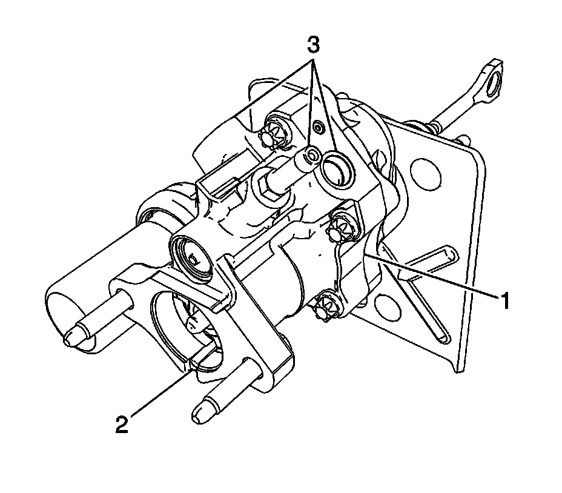
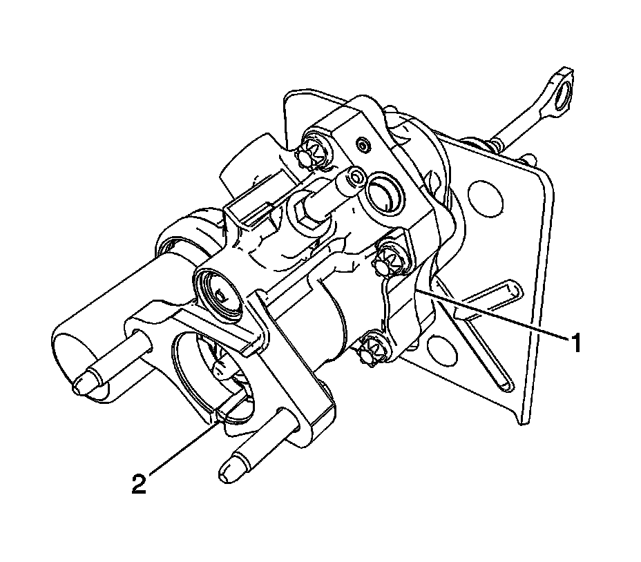

Hydraulic Brake Booster: Testing and Inspection
Power Brake Booster Leak Inspection

Important: The power brake booster may appear wet due to excessive assembly fluid during manufacturing or brake fluid that could have been spilled during system fill. In an effort to prevent unnecessary replacement of the power steering boosters, perform the following power brake booster leak inspection before replacing the power brake booster.
1. Check the power steering system fluid and adjust the level if necessary. Refer to Checking and Adding Power Steering Fluid.
2. Clean any fluid off all of the following areas:
^ The power brake booster housing and fittings 3
^ The joint between the power brake booster housing and master cylinder 2
^ The end cap
^ The joint between the power brake booster housing and end cap 1
Important: To properly diagnose a leak condition, aid from an assistant may be required. The power brake booster system must be observed while completing this inspection.
3. Start the engine and allow the power steering fluid to reach operating temperature.
4. Allow the engine to idle and slowly apply the brake pedal to run-out, holding until the power steering pump reaches the pressure relief valve setting and hisses. Then maintain this brake pedal force for approximately two seconds longer, then release the brake pedal.
5. Allow the engine to idle with your foot off the brake for fifteen seconds.
6. Repeat steps 4 and 5 four more times.
Important: Do not hold the wheel for more than three seconds at full stop, as this will increase the fluid temperature in the pump above operating temperature.
7. With the engine idling, turn the steering wheel from stop to stop four times and hold the wheel at each stop for two seconds.
8. Increase the engine idle speed to approximately 1000 RPM and turn the steering wheel from stop to stop six times at a rate of one turn of the steering wheel approximately every second. Do not hold the wheel at full stop.
9. Allow the engine to idle with your foot off the brake for thirty seconds.
10. With the engine idling, apply the brake pedal to run-out and hold the pedal force at run-out for approximately one second and the release the brake pedal.
11. Repeat steps 7 through 10 four times.
12. Allow the engine to idle for thirty seconds and then turn the engine off.

Important: On low mileage vehicles, at joint between the power brake booster housing and end cap 1, light moisture is acceptable. If fluid droplets develop, the power brake booster must be replaced.
13. Inspect the power brake booster for any leaks
Important: A leak between the power steering brake booster 2 and the master cylinder is not acceptable. If a leak is present, the type of fluid must be determined. Power steering fluid indicates that the power brake booster needs to be replaced. Brake fluid indicates an issue with the brake master cylinder.
14. If the power brake booster is leaking, replace the power brake booster. Refer to Power Brake Booster Replacement.
15. If brake fluid is leaking, refer to Brake Fluid Loss for additional diagnostics.